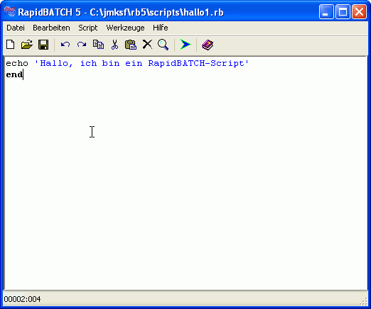
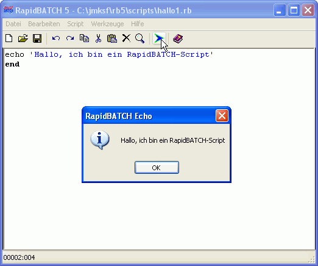
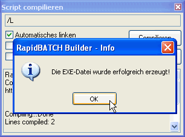

Ein einfaches Script
Bereits in der Einleitung haben wir Ihnen ein einfaches, zweizeiliges Script vorgestellt, welches den einfachen Aufbau eines in RapidBATCH programmierten Programms darstellen sollte:
echo 'Hallo, ich bin ein RapidBATCH-Script'
end
Um dieses Script auszuführen, müssen wir es erst einmal editieren und als RapidBATCH-Scriptdatei mit der Dateiendung .RB speichern.
Dazu sollten Sie den mitgelieferten Scripteditor RapidBATCH Builder benutzen, welcher Ihnen das komfortable Editieren von RapidBATCH-Scripts gestattet. Den Builder können Sie am einfachsten über das Startmenü (Start -> Programme -> RapidBATCH Personal Edition/RapidBATCH Professional Edition -> RapidBATCH 5.0) starten.
Nachdem Sie den RapidBATCH Builder gestartet haben, geben Sie dort den oben abgebildeten Quelltext ein.
Eingabe des Script-Codes im RapidBATCH Builder
Speichern Sie anschlieflend das Script in einem Verzeichnis Ihrer Wahl unter dem Dateinamen HELLO.RB (oder auch einem beliebigen anderen Dateinamen) ab. Nun kann das Script gestartet werden, indem Sie F5 drücken oder den Button "Script starten" in der Toolbar anklicken.

Ausführung des Scripts aus dem RapidBATCH Builder heraus
Herzlichen Glückwunsch zu Ihrem ersten, lauffähigen Script in RapidBATCH!
Wenn Sie im Besitz der RapidBATCH Professional Edition sind, können Sie Ihr Script durch Auswahl des Menüpunktes "Script" und dann "Compilieren" in eine ausführbare EXE-Programmdatei übersetzen. Diese EXE-Programmdatei kann als eigenständiges Programm auf jedem PC mit einem Betriebssystem ab Windows 95 ausgeführt werden. Das Programmicon der EXE-Datei ist mit einem individuellen Icon austauschbar, welches im Compiler-Optionsdialog ausgewählt werden kann.
Der RapidBATCH Script-Compiler zum Überführen einer .RB-Scriptdatei in ein lauffähiges EXE-Programm
Nach der Compilierung findet sich neben der .RB-Datei auch eine ausführbare .EXE-Datei unter selbem Namen.
Nachdem Sie nun das Script ausgeführt und compiliert haben, kommen wir zu Erklärung des obigen Beispiels: Die Anweisung ECHO gibt, wie Sie sicherlich schon vermutet haben, das Meldungsfenster aus. Als Parameter erwartet diese Anweisung einen Wert, nämlich den Meldungstext, der in dem Meldungsfenster angezeigt werden soll, also "Hallo, ich bin ein RapidBATCH-Script". Bei einigen Anweisungen muss der Parameter nicht unbedingt zwischen zwei Hochkommata ('...'), wie es hier der Fall ist, eingeschlossen werden, dies ist jedoch ein reiner Sonderfall, der nur bei Anweisungen oder Funktionen mit einem Parameter erlaubt ist. Im Allgemeinen sollten Sie Werte aber möglichst immer in Hochkommata schreiben, da die klassische Schreibweise (Werte ohne Hochkommata anzugeben) nicht mehr dem modernem RapidBATCH-Sprachstandard entspricht.
Die END-Anweisung, welche der ECHO-Anweisung in einer neuen Zeile folgt, markiert das Ende des Scripts. Sie muss zwar nicht zwingend angegebene werden, gehört aber zur sauberen Programmierung in RapidBATCH einfach dazu.
Ob Sie die Befehle gross oder klein schreiben, ist völlig egal, RapidBATCH macht keine Unterschiede zwischen "ECHO", "eChO" und "Echo". Es ist also Ihnen überlassen, wie Sie die Befehle schreiben möchten. Ich bevorzuge die Kleinschreibweise, wie im obigen Beispiel. Leerzeichen können überall im Code und zwischen Parametern eingesetzt werden, ebenso auch Tabulatoren. Das Ende der Zeile, also der Zeilenumbruch, markiert gleichzeitig das Ende der Anweisung, d.h. Sie müssen für jede neue Anweisung Ihres Scripts eine neue Zeile beginnen.
Bevor wir jetzt richtig loslegen mit den mächtigen Funktionen und schier unbegrenzten Möglichkeiten, die Ihnen RapidBATCH bietet, möchte ich vorweg noch auf die Verwendung von Kommentaren hinweisen. Kommentare kann man als Notizen im Quelltext ansehen, um die Verwendung bestimmter Operationen oder Vorgehensweisen zu Dokumentieren oder um zu beschreiben, was eine oder mehrere Anweisungen für ein Ziel verfolgen.
Kommentare helfen Ihnen, anderen Programmierern oder sogar dem Anwender, bestimmte Abläufe im Script nachzuvollziehen und besser bzw. schneller zu verstehen. Ich kommentieren daher den Quellcode der Beispielscripts in diesem Programmierhandbuch immer da, wo es mir wichtig erscheint; Das bedeutet nicht, dass jede einzelne Zeile explizit kommentiert wird oder werden muss, sondern nur die wichtigen bzw. kritischen Programmpunkte.
Um in RapidBATCH einen Kommentar einzuleiten, bedarf es der REM-Anweisung (was soviel heiflt wie das englische Wort "remark" für "Bemerkung"). Diese Anweisung leitet einen einzeiligen Kommentar ein, Beispiel wäre hier (bezogen auf unser erstes Beispielscript):
rem Ein einfaches Programm mit Ausgabe eines Textes in einem Meldungsfenster
echo 'Hallo, ich bin ein RapidBATCH-Script'
rem Programmende
end
Kommentare können nicht direkt hinter Programmieranweisungen folgen, sondern werden intern vom Interrpeter bzw. Compiler als eigenständige "Anweisung" angesehen; Daher muss jeder Kommentar immer in eine separate Zeile geschrieben werden.
Im nächsten Kapitel steigen wir nun richtig in die Materie der Programmierung von RapidBATCH-Scripts ein. Wenn Sie mit der Verwendung des RapidBATCH Builders noch nicht so vertraut sind, testen Sie die verschiedenen Funktionalitäten ruhig einmal aus.
Copyright © 2000-2006 by J.M.K S.F. Software Technologies, Jan Max Meyer
All rights reserved.